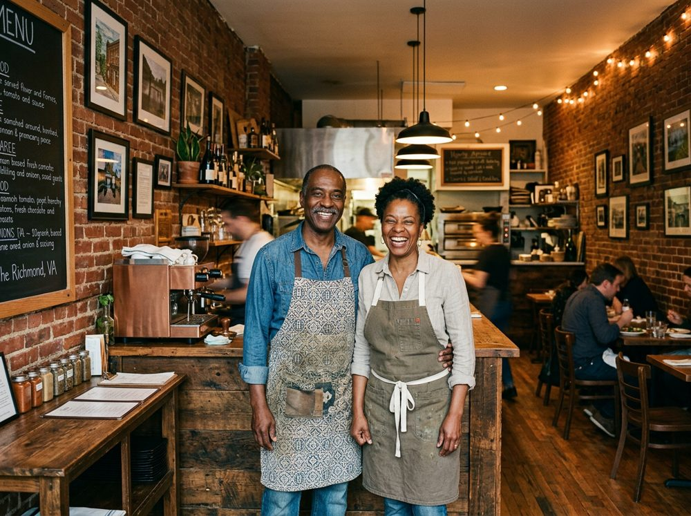
Richmond, VA · Jan 2026
Richmond restaurant owners get a 12-week accelerator and $1.1M in grants
Legal clinics and 1,400+ volunteer hours from 100th Street Bank staff went along with the grants in 2025.
We support small businesses with the resources, expertise, and connections they need to grow by directly partnering with local business incubators and accelerators.
By bridging the gap between where a business is today and its future potential, we help local entrepreneurs drive the economic growth that fuels their communities.
Organizations funded through the Hub, by U.S. Census division. Blue states have at least one funded organization.
Working alongside
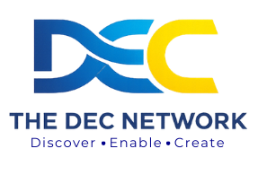
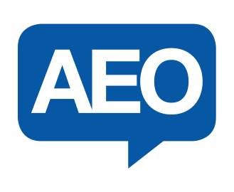
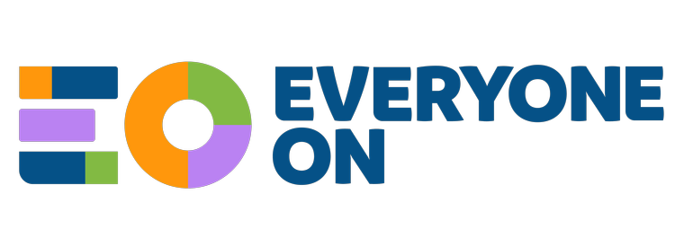
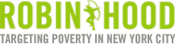
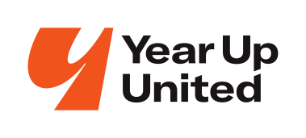
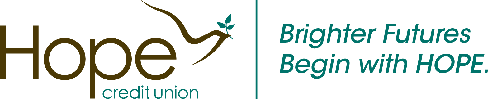
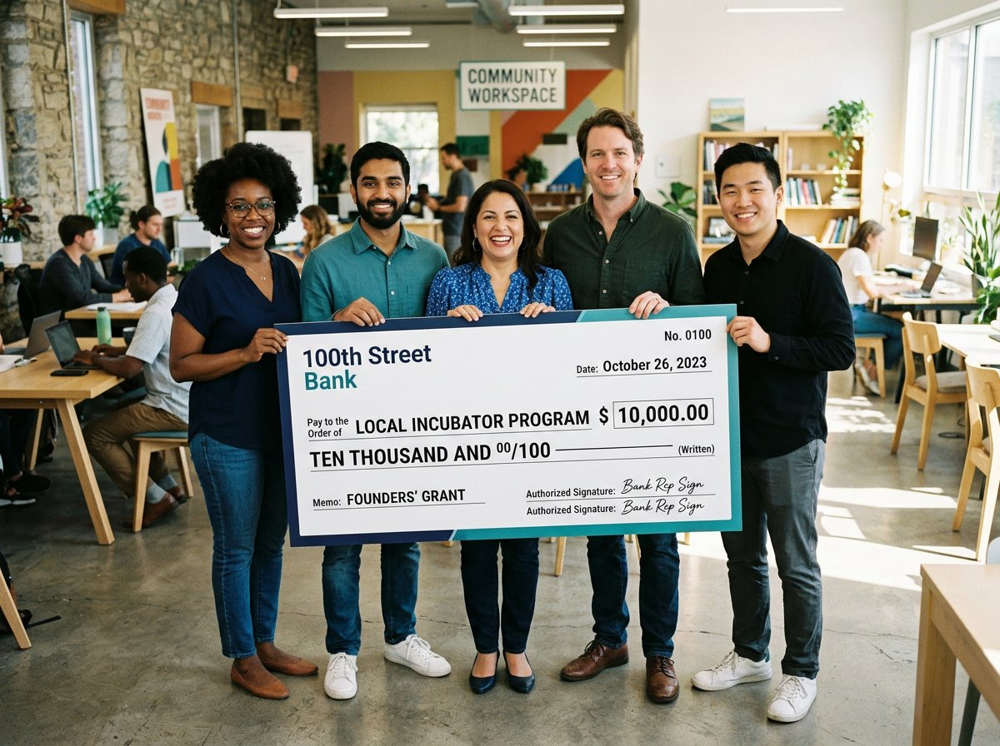
This isn't an application. Share a few details and someone from our partnerships team will reach out to talk about working together.
Available to every business enrolled in a partner incubator or accelerator.
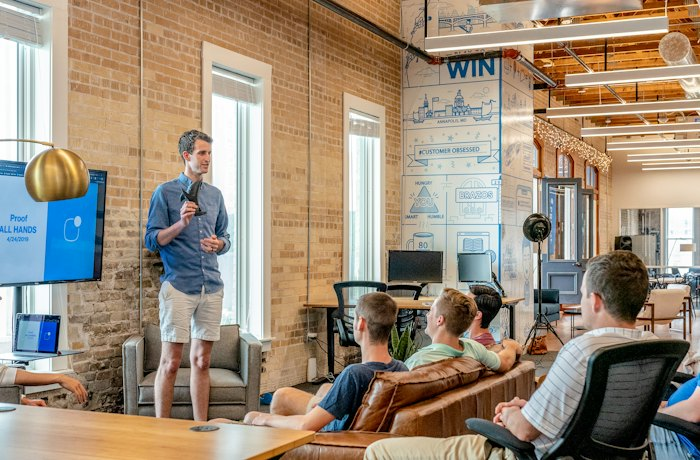
Mentorship cohorts for owners who want to increase revenue or solve critical challenges, plus one-to-one mentoring, growth consulting and pro bono legal clinics with bank volunteers in finance, legal, data, cyber and marketing.
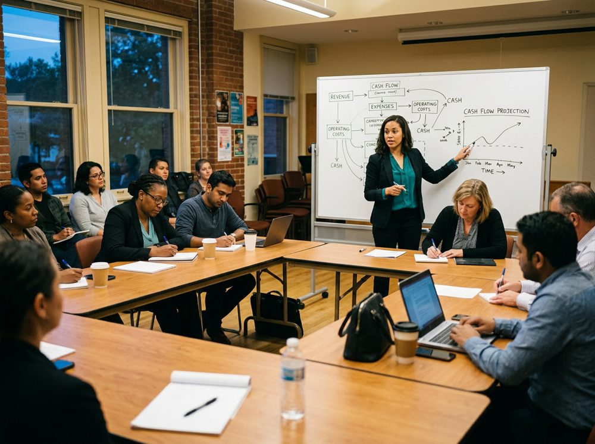
Free workshops, 1:1 office hours and member perks for every business in a partner cohort.
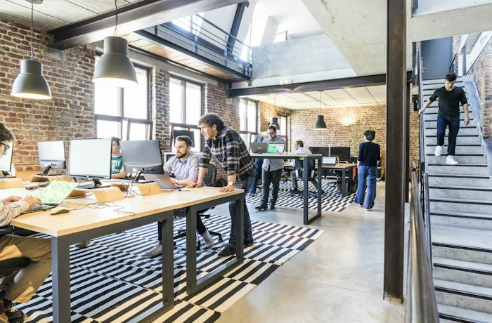
Connections to CDFI partners and funds such as SOAR for loans that fit early-stage businesses.
Expanded financial tools and access to credit, including checking, business cards and lines of credit, with warm intros to bankers who know the program when you're ready.
Find an incubator or accelerator near you. Hub support comes through your program.
Search below for an incubator or accelerator in your state that fits your business.
Each program runs its own intake. Once you're in, they enroll you in the Hub.
Your login opens up workshops, 1:1 coaching with bank volunteers, funding leads and member perks.
Coverage of programs in the network.

Legal clinics and 1,400+ volunteer hours from 100th Street Bank staff went along with the grants in 2025.
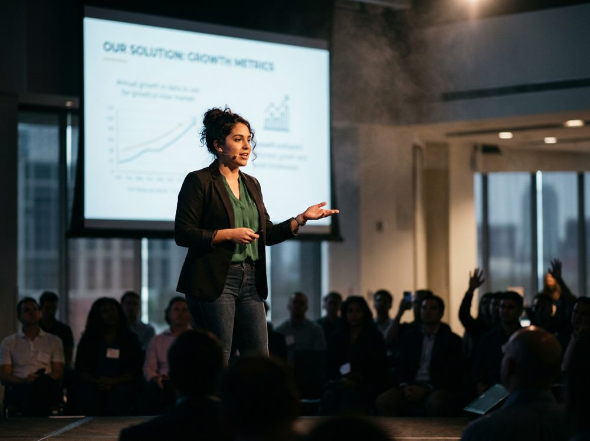
The program with UT Dallas paired curriculum and consulting with cohort grants of $15K, $10K and $2K.
The grants, run with AEO, came alongside $1.2M to the SOAR Fund for CDFIs in fifteen southern states and DC.
Founders get mentors, workshops and time with bank volunteers.
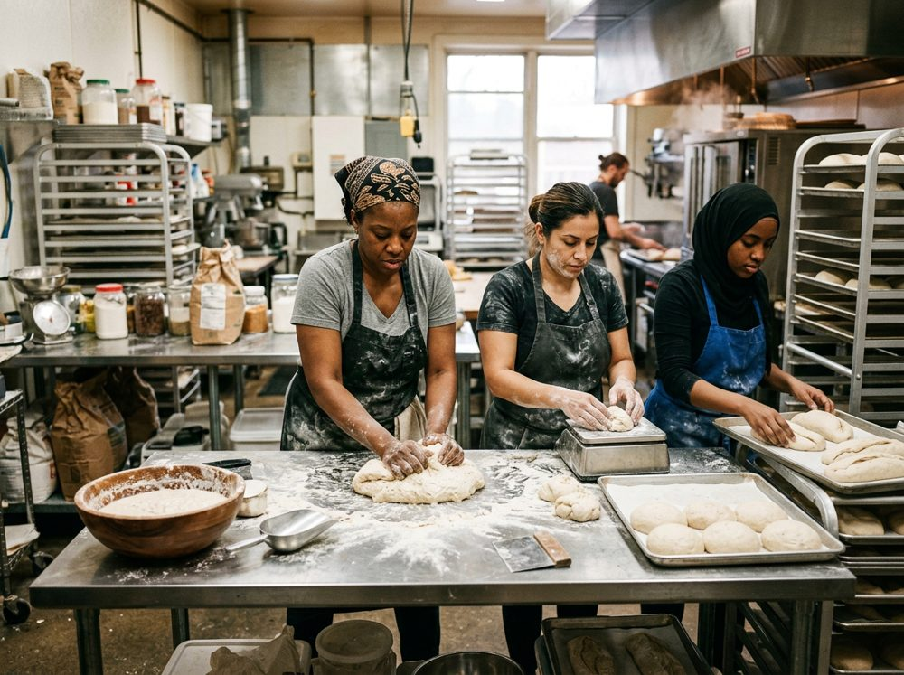
Incubator members get licensed kitchen space and help getting into markets.
Rising Tide Capital's Community Business Academy trains neighborhood entrepreneurs.
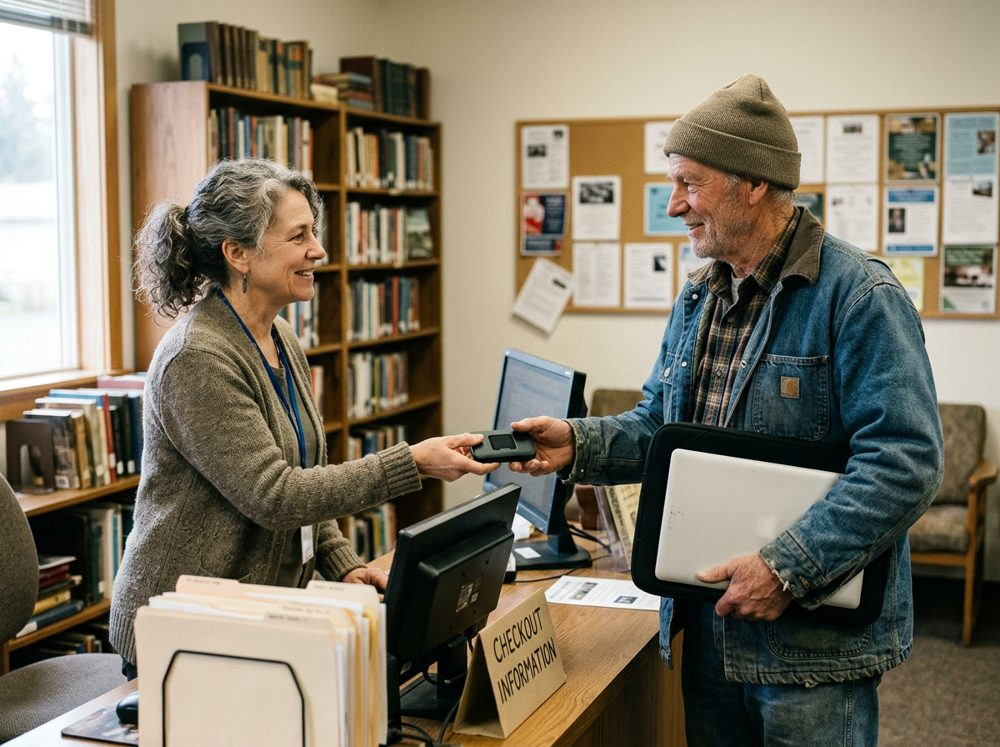
81% of participants in Georgetown and Laurel said their internet access improved.
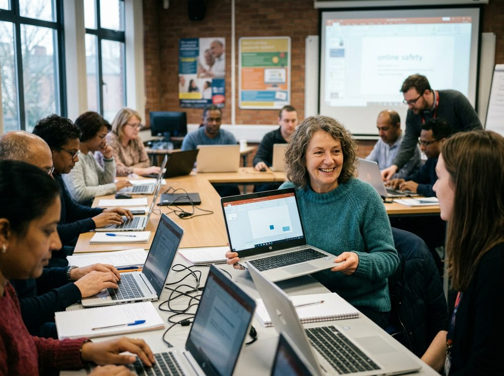
Multi-week classes run with local nonprofits.
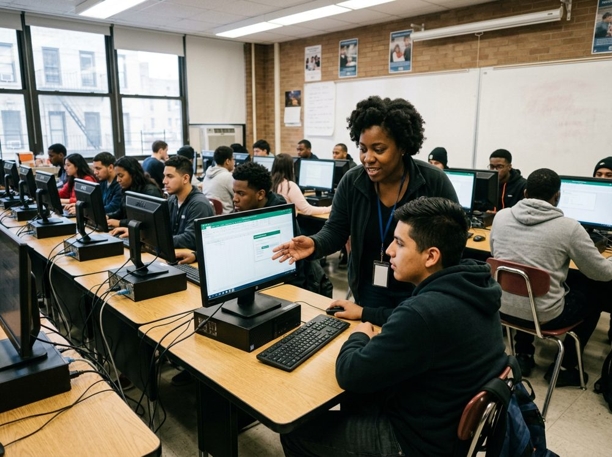
The grant to Robin Hood supports training and wraparound services.
Small businesses: find a program near you. Incubators and accelerators: bring the Hub to your community.
Find an incubator/accelerator near you Become an Impact Hub Partner